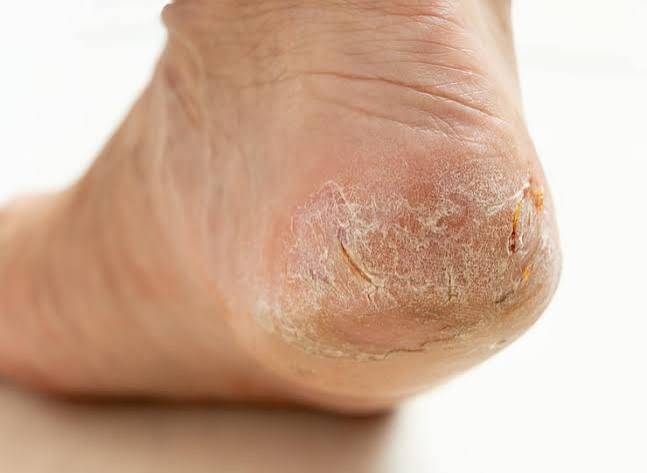
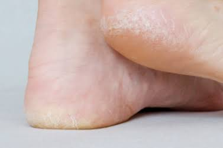

La piel del pie es un ecosistema
La piel tiene su propio equilibrio. Cinco elementos trabajan juntos para mantenerlo:
Cuando ese equilibrio se rompe
Las condiciones se vuelven más favorables para ciertos microorganismos cuando aparece alguno de estos factores:
- Humedad constante o maceración, por ejemplo entre los dedos.
- Exceso de sudoración y calcetines o calzado que no transpiran.
- Fricción repetida en las mismas zonas.
- Productos irritantes o jabones agresivos.
- Deterioro de la barrera cutánea, con piel agrietada o fisurada.
Estos factores locales son los más frecuentes y los primeros que hay que corregir.

El círculo
- 1. Desestabilizacion de la barreraLa barrera se rompe y la piel pierde protección.
- 2. Resequedad y descamacionPrimeros sintomas.
- 3. GrietasSintomas de una micosis mas avanzada.
- 4. Infeccion de las uñasDe la piel a la uña, tambien una uña infectada puede ser el factor desencadenante de un hongo en piel.
La piel y la uña se reinfectan entre sí: una uña con hongos sin tratar puede ser el reservorio de un pie de atleta que no termina de curar. Por eso conviene tratar ambos.

La variable que suele quedar fuera: el metabolismo
Un metabolismo alterado, especialmente con diabetes o hiperglucemia sostenida, puede afectar varios mecanismos que protegen al pie:
- Defensas: la glucosa alta se asocia con una función menos eficaz de las células que combaten las infecciones.
- Circulación: menos riego sanguíneo significa menos recursos para defenderse y reparar.
- Sensibilidad: si el pie siente menos, pequeñas lesiones pasan inadvertidas.
- Reparación: las heridas y fisuras tardan más en cerrar.
¿“El azúcar causa hongos”?
Lo que se suele decir
“Si comes azúcar, te salen hongos en los pies.”
Lo que es más preciso
Una micosis necesita un hongo susceptible y condiciones favorables en la piel. Cuando el metabolismo está alterado, cambian las condiciones que determinan cómo responde el organismo a la infección y cómo se recupera la piel.
Aquí entra la alimentación: lo que comemos influye en la glucosa, en la secreción de insulina y, a largo plazo, en el estado metabólico. Es parte del contexto en el que viven los tejidos del pie, no una causa directa del hongo.
No hay una dieta que cure un hongo. Si tienes diabetes o factores de riesgo metabólico, habla con tu médico antes de cambiar tu alimentación o tu medicación.
Cuándo merece la pena mirar más allá de la superficie
- Los hongos reaparecen aunque completes el tratamiento.
- Hay grietas profundas, descamación persistente o fisuras que se infectan.
- Las heridas tardan en cerrar.
- Notas menos sensibilidad, hormigueo o ardor en los pies.
- Tienes diabetes, prediabetes u otros factores de riesgo metabólico.
Si hay enrojecimiento que se extiende, calor, dolor, pus, mal olor o fiebre, busca atención médica cuanto antes.
Qué hacer si el hongo sigue volviendo
- Confirma el diagnóstico. Eccema, psoriasis y otras infecciones pueden parecer hongos. Un examen clínico y, si es posible, una prueba de laboratorio evitan tratar lo que no es.
- Completa el tratamiento. Suspenderlo cuando mejoran los síntomas es una causa frecuente de recaída.
- Trata piel y uñas a la vez. Si uno de los dos queda sin tratar, puede reinfectar al otro.
- Corrige la humedad y el entorno. Seca bien entre los dedos, alterna el calzado, cambia de calcetines y limpia el calzado y las superficies donde pisas descalzo.
- Revisa el contexto de salud. Si hay diabetes o factores de riesgo, pide una valoración médica y controla la glucosa.
- Revisa tus pies a diario. Sobre todo si sientes menos, para detectar fisuras o lesiones a tiempo.
Preguntas frecuentes
¿El azúcar causa hongos en los pies?
No de forma directa. Una micosis necesita un hongo susceptible y condiciones favorables en la piel. Lo que ocurre es que un metabolismo alterado, sobre todo con hiperglucemia sostenida, puede afectar las defensas, la circulación y la reparación de los tejidos.
¿Por qué el hongo me vuelve a salir después de tratarlo?
Las causas más frecuentes son un tratamiento incompleto, una uña infectada que reinfecta la piel, humedad constante, calzado contaminado o una condición de salud que facilita la infección. También puede que no fuera un hongo desde el principio.
¿Debo cambiar mi alimentación si tengo hongos recurrentes?
No hay una dieta que cure un hongo. Pero si existe diabetes o factores de riesgo metabólico, la alimentación forma parte del control de la glucosa y conviene abordarla con un profesional de la salud.
¿Un hongo en el pie es más peligroso si tengo diabetes?
Puede serlo. En personas con diabetes, una micosis o una fisura pueden convertirse en puerta de entrada de infecciones bacterianas, y por eso conviene tratarlas pronto y con seguimiento.
Lo más importante
El hongo está en el pie. Pero para entender por qué vuelve, a veces necesitamos mirar el organismo completo: el equilibrio de la piel, la humedad, el calzado y también el estado metabólico.
En BeautyPod valoramos el pie con esa mirada: no solo cómo eliminar el hongo, sino qué hace que este pie vuelva a ser susceptible.
Fuentes consultadas
- PMC12387541 – Onicomicosis en personas con diabetes: una infección frecuente con posibles complicaciones graves
- MDPI (Life) – Onicomicosis en diabéticos: epidemiología, diagnóstico y tratamiento
- PMC5017097 – Frecuencia de tiña del pie y onicomicosis en pacientes con diabetes y úlceras del pie diabético
Conoce todo lo que tratamos en nuestra página de podología o lee más en el Blog de BeautyPod. Si el hongo está en la uña, lee también Onicomicosis y hongos en la piel y ¿Funcionan las cremas antifúngicas en los hongos de las uñas?.